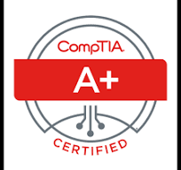
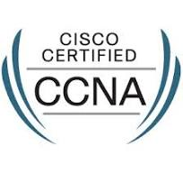

PROFILE
An accomplished Senior IT Engineer with 12 years of extensive experience, specializing in IT infrastructure management,
system administration, and network security. Proven expertise in implementing innovative technological solutions to
enhance operational efficiency and drive business growth. Skilled in managing complex IT projects, providing technical
leadership, and ensuring the seamless functioning of critical IT systems. Passionate about leveraging emerging technologies
to optimize organizational performance and deliver superior IT services
|  |  |
WORK-EXPERIENCE
SENIOR ENGINEER -IT,
SYSKA MITERR PVT LTD. | Dharuhera,
Corporate Office: B-92, Third Floor, South City-1,GGN-122 001, Haryana, India
Unit-1: Plot No.30, 1/A, HSIIDC, Dharuhera, Rewari- 123 106, Haryana, India.
Currently associated with Syska Miterr Private Limited (A joint venture with Syska Led Lights Pvt Ltd. Emdet Engineers Pvt Ltd
and Miter & Miter Groups) lead by a team of successful passionate entrepreneurial technologists with decades of experience amongst
them in the field of switch-gear, wires & cables, Lighting large scale manufacturing and execution of big businesses and
supported by a global network of industry leaders at the forefront of the latest innovation and technology in Switch-gear & Wires and Cables.
Current Responsibilities:
● Orchestrated seamless communication between Corporate Office
and Unit 1 while upholding network and systems integrity.
● Proficiently administered Windows Server 2016, overseeing an
array of services including Wind-chill Remote Access and Tally
Remote Data Services.
● Mastered OS installation (Linux and Windows), peripheral
configuration, and driver setup.
● Proficient in troubleshooting OS and server issues across diverse
platforms such as Windows, Linux (Ubuntu 16.04,
18.04, 20.04, 22.04 LTS), and Windows Server 2016.
● Expertly resolved Proximo ERP (Version php7.01) client issues
and tackled network-related challenges, including local and
network printer troubleshooting.
● Skill-fully managed online meetings via Jitsi Meet, Microsoft Teams,
and Zoom, in addition to facilitating data sharing through
WD Sharing Point.
● Ensured optimal performance and availability of network
infrastructure, including switches, routers, cabling, and firewall
configuration and maintenance.
● Proficient in LAN, WLAN, and WAN setup, hardware and
networking diagnosis, and installation of various printers.
● Installed, monitored, and maintained CCTV cameras, and
managed telephone connections (intercom) with basic proficiency.
● Provided top-tier technical support to users via phone, endpoints,
and remote access, while fostering a dynamic team environment
with transparent communication and goal alignment.
● Demonstrated leadership acumen by effectively managing team
dynamics and setting strategic objectives for heightened
productivity and synergy.
CCE, DMS CLIENT AND SERVER SUPPORT,
AGARWAL MOTORS | Rudrapur,
Roles & Responsibilities:
● Managed Windows Server 2012 (R2) with diverse services including DMS, Tally 9, Data Management, and File sharing.
● Conducted troubleshooting for client-related issues.
● Ensured manual backup of user data on the server.
● Facilitated user-based software training sessions such as MS-Office.
● Performed repair and maintenance for hardware and software-related issues in systems.
● Collaborated with cross-functional teams to identify and implement system enhancements for improved efficiency and performance.
● Actively participated in IT procurement processes, ensuring the acquisition of necessary hardware and software resources.
NETWORK/DESKTOP SUPPORT ENGINEER,
HCS | Delhi,
Roles & Responsibilities:
• Responsible for providing primary backup for networks and systems should they face any technical problems.
• Responsible for troubleshooting on all programs when required.
• Responsible for developing proposals and helping to finalize opportunities that reduce organization expenses.
• Responsible for creating and keeping up with all of the extensive documentation related to the implemented network.
• Responsible for attending to customer service requests.
• Responsible for Going to the client's location or establishing a remote connection.
• Responsible for resolving software and hardware problems.
• Responsible for guiding users with clear, detailed instructions.
DESKTOP SUPPORT ENGINEER (Trainee),
Simple Infosystems Pvt. Ltd. | Noida
Roles & Responsibilities:
• Responsible for responding to client inquiries.
• Responsible for providing technical support to users.
• Responsible for troubleshooting hardware and software issues on site.
• Responsible for providing instructions or directly setting up desktop hardware.
• Responsible for assisting with installation of computer software and operating system updates.
• Responsible for recording logs of rendered support.
SKILL
- Network & System Troubleshooting (Problem Solving)
- Git & Github
- website developing (HTML, CSS, JavaScript etc)
- Network Infrastructure Design
- Firewall (Sophos), Router and switch
- Linux (CentOS, Ubuntu, Kubuntu etc.)
- Microsoft System & Servers
- Closed-Circuit Television Systems (CCTV)
- Graphic design Software's (Photoshop, Coreldraw, GIMP etc.)
- SAP HANA And ERP Promix Experience Working with the support team
EDUCATION
| Examination | Year | School/College | Board/University |
|---|---|---|---|
| Class X | 2004 | Janta Inter College, Rudrapur (U.S.Nagar) | U .A. Board (Uttarakhand) |
| Class XII | 2006 | Janta Inter College, Rudrapur (U.S.Nagar) | U .A. Board (Uttarakhand) |
| Bechelor of commerce | 2009 | Kumaun University, Nainital | Kumaun University |
TECHNICAL-QUALIFICATION
- Higher Diploma in System and Networking (Global Net+) course from
NIIT- Connaught Place, New Delhi).
(Session- 16 Nov. 2009 to 6 Feb. 2012)
- The Compelete Web Developer course 3.0
- HTML 5
- CSS 3
- Javascript
- jQuery
- Bootstrap
- WordPress
- PHP
- MySQL
- APIs
- Linux Command Line
- Python
- SEO (Search Engine Optimisation
- Web Hosting
- Tally 7.2 & Basic Computer Course (MS-Office (MS_Word, MS_Excel, etc) Internet etc.) From Bilingual (The school of foreign languages & Computer education, Haldwani (Uttarakhand)
CERTIFICATIONS:
| CERTIFIED | EXAM | INSTITUTE NAME |
|---|---|---|
| CompTIA A+ | (1) CompTIA A+ Essential (2) CompTIA A+ Practical Application |
NIIT Connaught Place, New Delhi | MCITP (Microsoft certified Information Technology professional) |
(1) Windows 7, Configuration (2) Windows server 2008 Active Directory Configuration (3) Windows server 2008 Network Infrastructure, Configuration (4) Server Administrator on Windows server 2008 R2 |
NIIT Connaught Place, New Delhi |
| CCNA | (1) Cisco certified network associate | NIIT Connaught Place, New Delhi |
PERSONAL-DETAILS
| Father’s Name | = | Mr. Gyanendra Bala |
| Date of birth | = | February 10, 1987 |
| Sex | = | Male |
| Nationality | = | Indian |
| Marital status | = | Married |
| Languages-Known | = | English Hindi Bangla  |
CONTACTS
| +91- 8585-96-8585 | |
| abhijeetbala@outlook.com | |
| House No. - 724, Sanjay Nagar, Ward No. -11, Rudrapur, Udham Singh Nagar,Uttarakhand - 263153, India |
DECLARATION
All the above information is correct and under my knowledge .I would be responsible for any type of mistake.
-Abhijeet Bala
Rudrapur, Uttarakhand